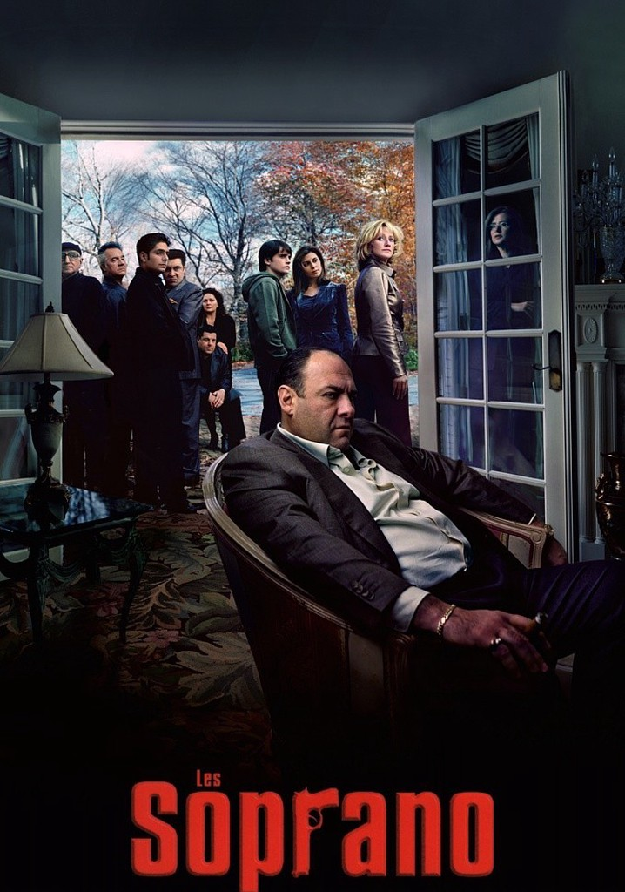
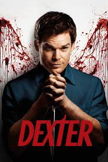
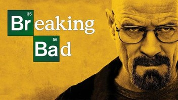

SERIES
1.LOS SOPRANO

Tony Soprano intenta equilibrar los problemas de su familia disfuncional con otra " familia" muy diferente - la mafia. Acude a un terapeuta para tratar sus problemas profesionales y personales, que causan ataques de pánico. El "jefe" de la organización criminal lidia con luchas de poder, las relaciones amorosas, la violencia, la amenaza constante de ser descubierto y traicionado, y con todas las personas que están en la mira por sus actividades.
2.DEXTER

Dexter Morgan un experto en salpicaduras de sangre que reside en Miami, no resuelve solamente casos de asesinato sino que también los comete. De hecho, él es un asesino en serie que únicamente mata a los culpables, justificando así sus acciones y su estilo de vida. Su hermana, una policía y sus colegas policías no tienen idea que Dexter tiene una vida doble, aunque su padre adoptivo, Harry conoce su secreto y de hecho le ayuda a mejorar sus "habilidades". Es una forma de justicia única en la cual el encantador Dexter se siente ávido de llevarla a cabo
3.BREAKING BAD

El profesor calmado de química de una secundaria, Walter White cree que su vida no puede ser peor. Su salario apenas le alcanza para sostener a su familia, una situación que no mejora cuando su esposa da a luz y su hijo adolescente sufre de parálisis cerebral, pero Walter queda anonadado cuando se entera que tiene un cáncer terminal. Al concluir que su enfermedad iba a arruinar financieramente a su familia, él toma una decisión desesperada con el fin de ganar más dinero durante el tiempo que le queda y transforma un viejo vehículo de recreación en un laboratorio de matanfetaminas sobre ruedas.
4.DIARIO DE VAMPIROS
Pocos meses después de que sus padres fallecieron en un accidente automovilístico, Elena Gilbert y su hermano, Jeremy tratan de mitigar la pena de su pérdida. Para Elena, una chica que fue muy popular y que está involucrada en su colegio y con sus amigos, le es difícil esconder su tristeza de los demás. Ella se encuentra extasiada con un nuevo estudiante apuesto y misterioso, Stefan, desconociendo que él es un vampiro de varios siglos de edad que está tratando de hacer lo mejor para vivir en paz junto a los humanos. Su hermano, Damon por el contrario encarna, el estereotipo de un vampiro incluyendo el ser violento y brutal. Los dos hermanos tienen una lucha por las almas de Elena y el resto de los residentes de una población pequeña de Virginia. Basada en la serie de novela de L.J. Smith.
5.DAHMER
La historia de uno de los asesinos en serie más conocidos de Estados Unidos, contada desde los puntos de vista de sus víctimas.